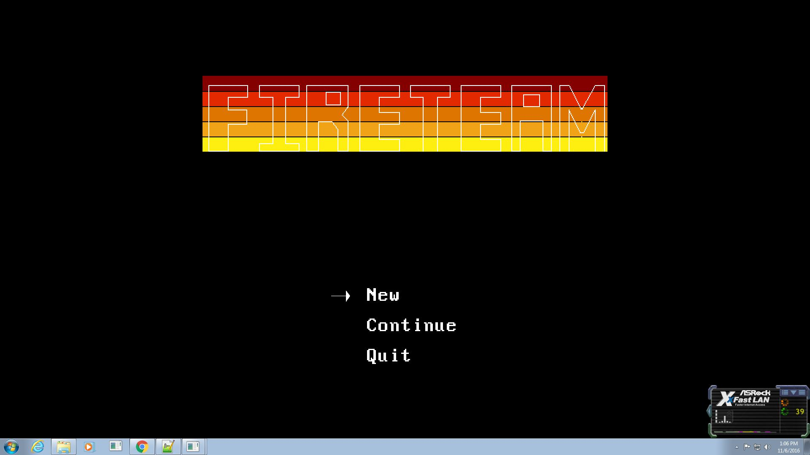
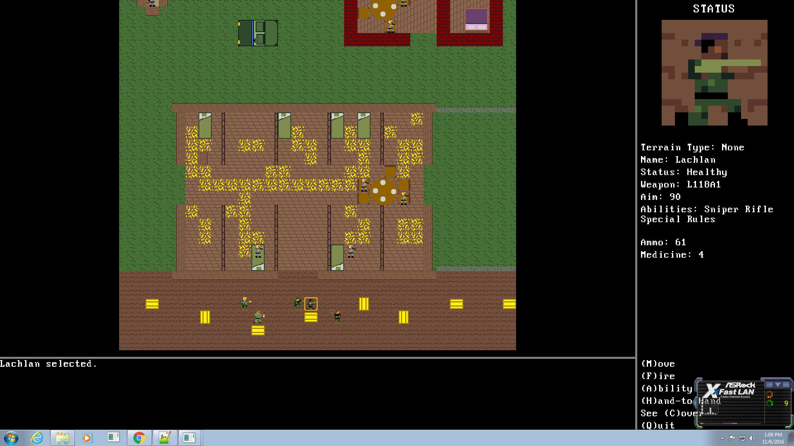
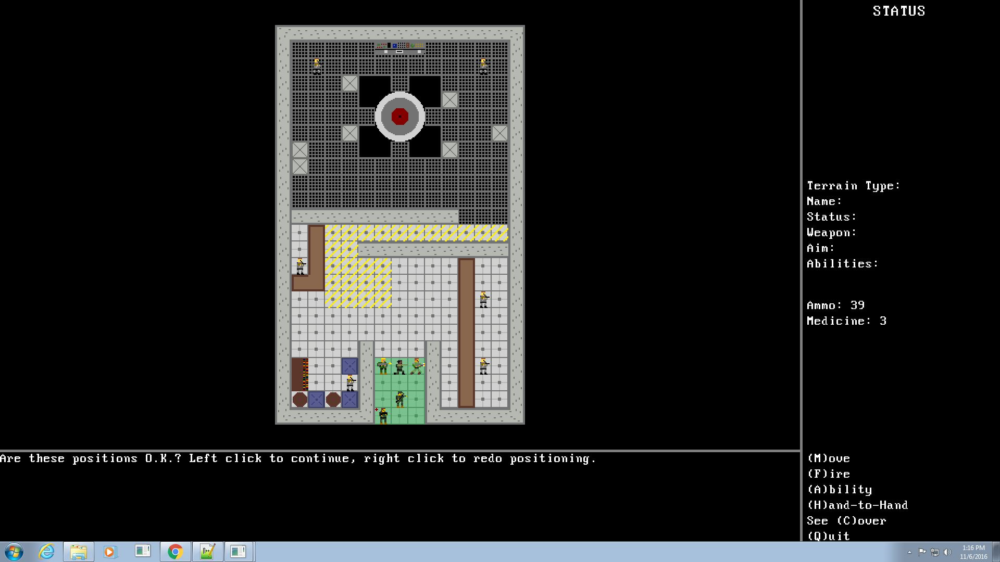
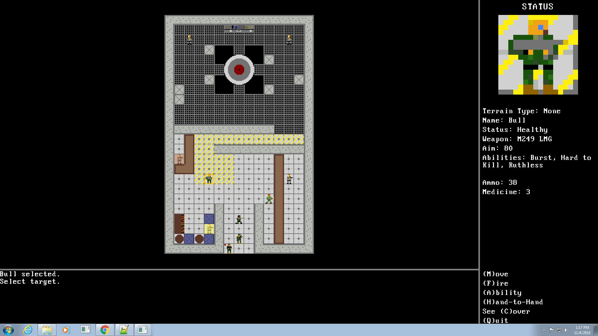
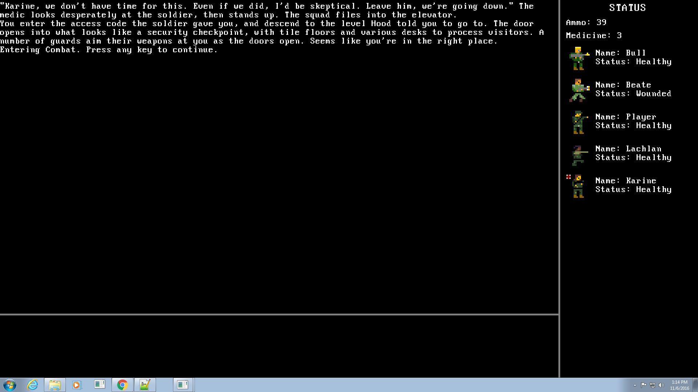

| Home | Software Projects | Writing | Contact |
FIRETEAM was a project I did over the course of the summer between my Junior and Senior years in college. I wrote this game from the ground up, and had grand ambitions--it was going to be a squad-based tactical shooter with a sprawling, multi-pathed campaign that forced the player to juggle resources, party members' moods, and morality as they made their way across Europe on a quest to get home. It was also going to be the project I used to teach myself C++ and visual studio, and I was going to write both the combat and narrative engines from the ground up, because, well, why not? When all was said and done, I had a 4 level demo that introduced the characters and provided functional gameplay. Unfortunately the interface doesn't make much sense if you're not the one who programmed it, and the combat isn't much to write home about. I'm extremely proud of how much I was able to build, though, and I really like the setting and characters I created for it.
I tried to write things so that the characters who were most useful in combat were also the characters that advocated doing more morally questionable things, to try and create tension between pleasing people who were important to your goal while also maintaining a moral compass. I also tried to write the characters in different ways so they'd have points of attraction and repulsion with each of the other characters. For example, many decisions will have Bull and Beate on one side and Lachlan and Karine on the other, since the former are the emotionally numb combat veterans, and the latter mostly just want things to stabilize so they can go home. But Bull and Beate's ruthlessness are driven by different motivations (psychopathy and past necessity, respectively), which occasionally puts them on different sides of decisions, and affects their personal relationships with the other characters when there's not a Big Choice for the player to make. Lachlan and Karine view the veterans with differing mixes of fear and awe; Bull is interested in the opportunity to impress his values onto the younger man; Beate in some sense values the younger members' naivete as a representation of a life she did not have the opportunity to live; and Karine, Beate and the PC's experiences as women in the military provide common ground, especially in the face of Bull's chauvanism or outright sexism.
Unfortunately, those dynamics exist more in my head than the limited introductory story I actually had the time to put on the screen. I'd really like to go back to FIRETEAM someday, but a hard drive crash wiped out the source code. Luckily the writing all exists in the game files, and that's more interesting to me at this point anyways. I think there's room for a game that has the same basic structure, but with the tactical combat replaced by something much simpler that still makes combat skill and resource management important considerations over the course of the story.
    